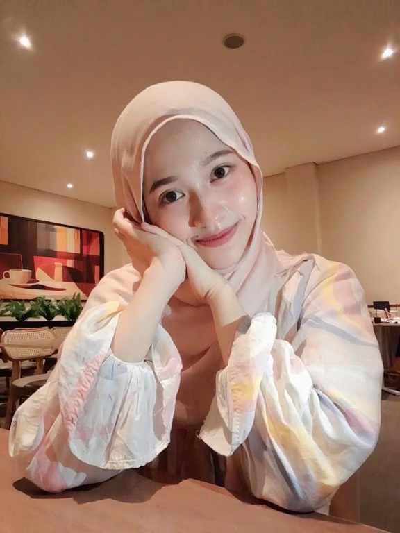
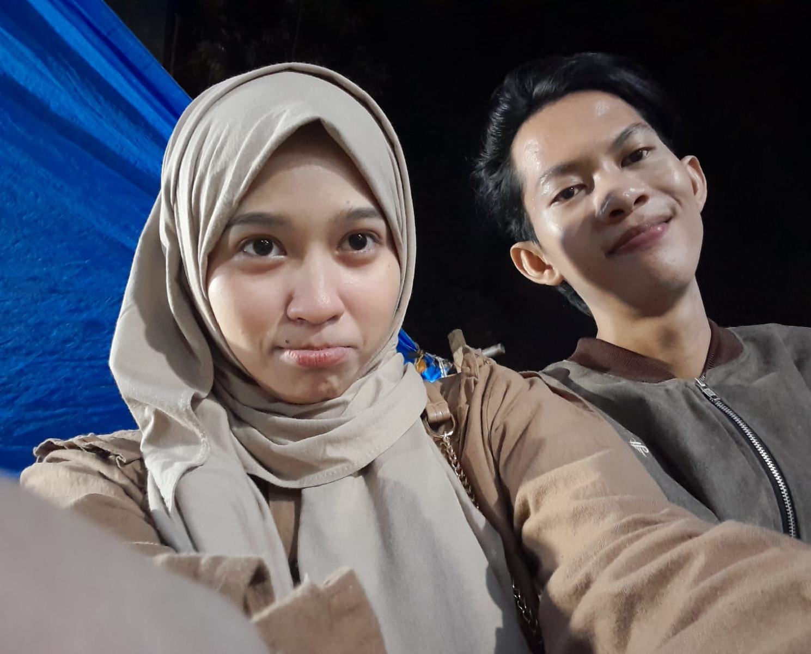
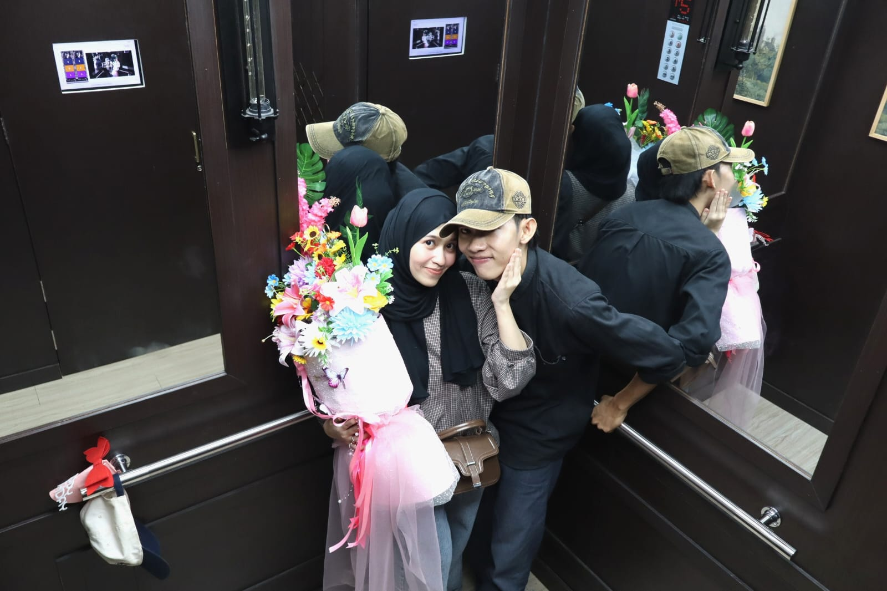

Sesuatu yang sangat manis sedang menunggumu cantikk, Nandia Della Putri... 💖
00Hari
00Jam
00Menit
00Detik
Ada Hadiah Spesial! 🎁
Ketuk atau klik kado manis di bawah ini untuk membukanya yangg! ✨
Klik untuk membuka ucapan dari Adi
Your Special Day 💌
A sweet letter written with love by Adi for Nandia Della Putri ❤️
To: Nandia Della Putri
Selasa, 27 Oktober
Forever yours, Adi ❤️
Our Precious Memories 🌸
Setiap momen manis bersama Nandia yang paling berharga ✨

Senyuman Manismu 💖

Selalu Bersama ✨

Moment Indah Kita 🌹
💖
Happy Birthday, Nandia Della Putri! 🎂
"Happy birthday, cayanggkuu, Nandia Della Putriii. ❤️🎂
Semoga di usia camu yang baru ini, Allah selalu melindungi camu, melimpahkan kebahagiaan, kesehatan, rezeki yang berkah, dan memudahkan setiap langkah camu dalam meraih impian. Semangat terus menjalani hari-harinya yaa, sayangg. Jangan terlalu keras sama diri sendiri, acu harap camu selalu punya alasan untuk tersenyum dan tetap kuat menghadapi apa pun. Semoga semua doa baik camu Allah kabulkan di waktu yang paling indah. Aamiin ya Rabbal 'alamiin. 🤍
Dan semoga kita bisa terus menciptakan banyak kenangan indah, saling menguatkan, dan sama-sama berjuang menjadi pribadi yang lebih baik. Acu sayanggg banget sama camuuu. Semoga hal-hal baik selalu menemukan camu, hari ini dan seterusnya. 💗🫂! I'm always here for you yangg."